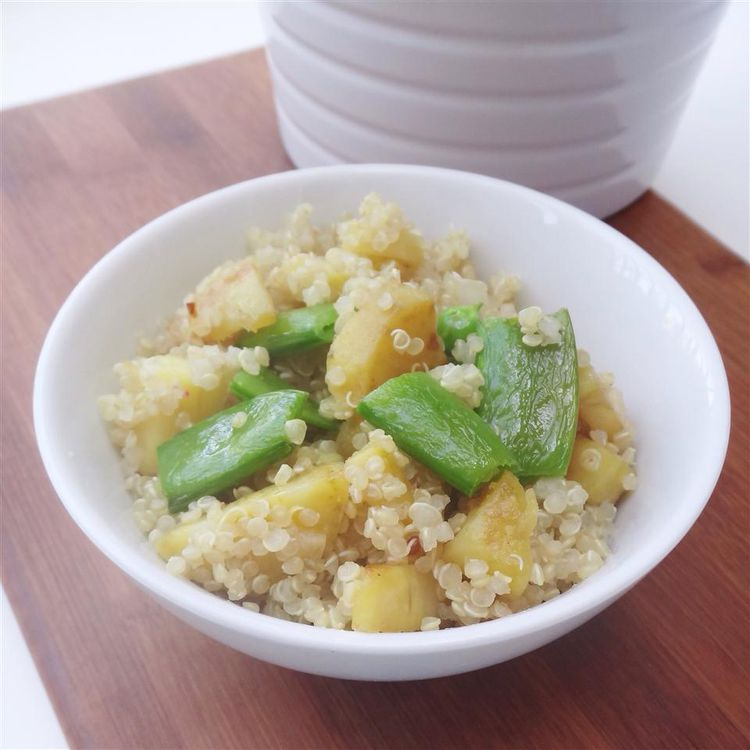

Quinoa Bowl

Description
Simple dish that is very healthy, vegetarian, and can be a side or main course. Great to make and pack as a lunch for a few days after.
Ingredients
- 1 tablespoon extra-virgin olive oil, or as needed
- 3 sweet potatoes, cut into 1/2-inch pieces, or more to taste
- salt to taste
- 1 large yellow onion, chopped
- 1 clove garlic, chopped
- 1 cup asparagus, or more to taste
- 4 cups water
- 2 cups quinoa
Steps
- Heat olive oil in a skillet over medium-high heat. Add sweet potatoes and salt; stir to coat sweet potatoes with oil and saute until tender yet firm to the bite, about 10 minutes. Transfer sweet potatoes to a plate and season with more salt.
- Saute onion and garlic in the same skillet until softened, 4 to 5 minutes.
- Place a steamer insert into a saucepan and fill with water to just below the bottom of the steamer. Bring water to a boil. Add asparagus, cover, and steam until tender, about 4 minutes. Cut asparagus into 1/2-inch pieces.
- Bring water and quinoa to a boil in a saucepan. Reduce heat to medium-low, cover, and simmer until quinoa is tender and water has been absorbed, 10 to 15 minutes.
- Toss sweet potatoes, onion-garlic mixture, asparagus, and quinoa together in a bowl; cool to room temperature. Add cashews and top with more olive oil and salt.